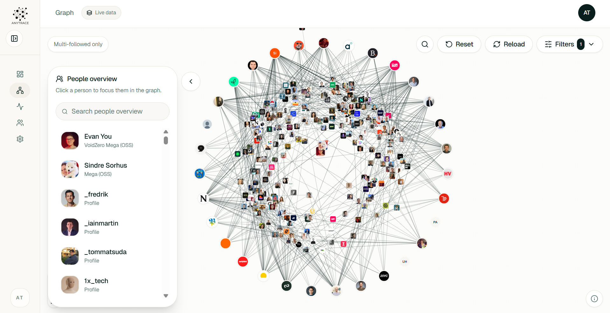
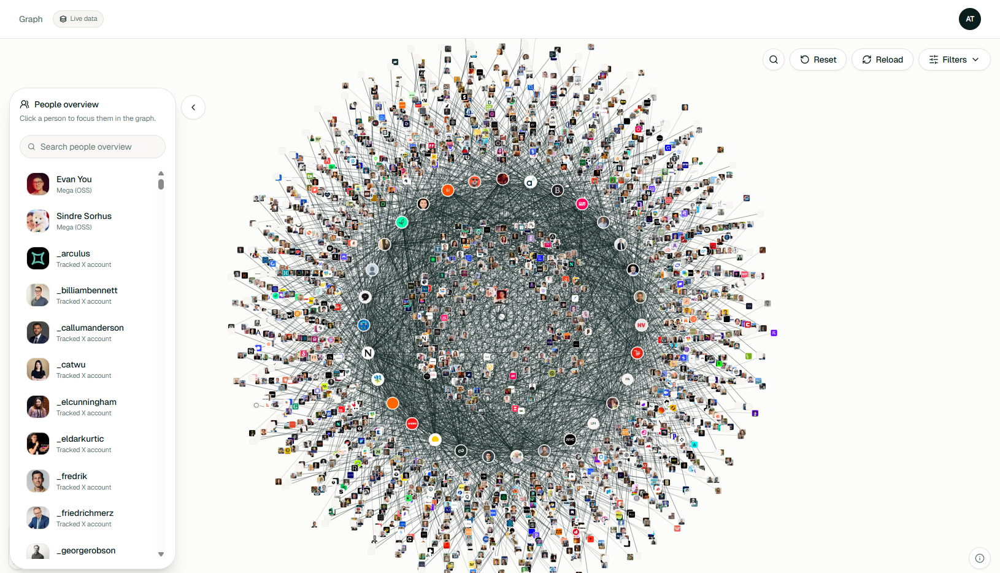
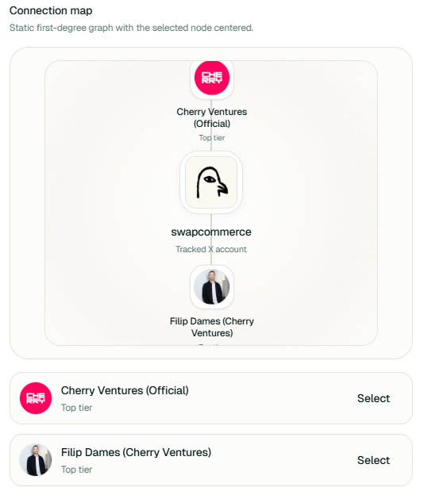
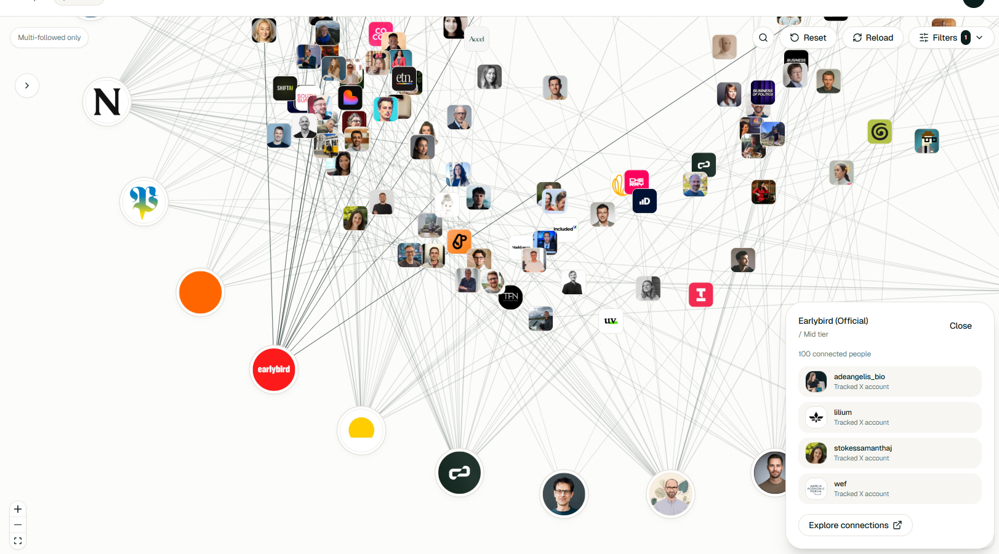
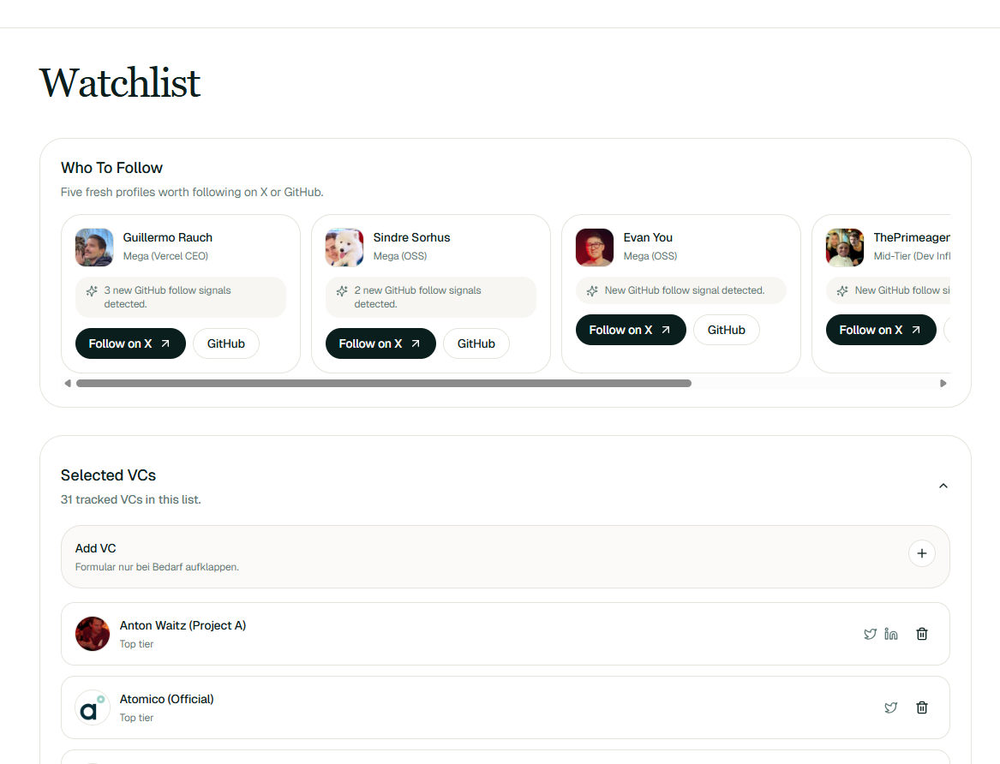

Weekly Ranking
See who is moving up this week with score, context, and a clear explanation behind every change.
No generic feeds, no disconnected screenshots, no signal noise. AnyTrace connects X, GitHub, LinkedIn, and curated VC profiles into one readable interface for sourcing, ranking, and conviction.



Connections between VCs, founders, and repositories — visible, filterable, and traceable in real time.
AnyTrace condenses relevant signals into a few clear surfaces. Each one helps teams prioritize, understand, and discuss what matters.
See who is moving up this week with score, context, and a clear explanation behind every change.
Connections between VCs, founders, and projects become readable instead of implicit — and filterable.
Every score jump can be traced back to a specific event. That creates trust in both signal and weight.
Teams stay aligned on the right people, repos, and funds without losing context across tools.
Multi-follow patterns make conviction visible before anyone reaches out. When multiple tracked VCs follow the same account, AnyTrace surfaces it immediately — not buried in a list.
Request access

Pin any VC, founder, or fund. AnyTrace keeps tracking them in the background and surfaces new follow signals, score changes, and connection shifts — so your team always works from the same picture.
Request accessThe activity feed shows exactly which VC followed whom and when — filtered by X, GitHub, or LinkedIn. No aggregation, no black box. Just the raw signal with a direct link to the source.

AnyTrace ingests signals from X, GitHub, LinkedIn, and curated VC sources continuously.
Profiles, repositories, and funds are connected through visible edges and timestamped events.
Evidence, score, and timeline make it clear why momentum is forming — no black boxes.
Your team decides faster which people and projects matter next, with shared context.
Every view is built for readability. This is what AnyTrace actually looks like in production.
We are onboarding a small number of venture teams. If sourcing is a priority for you, reach out and we will set up a demo.